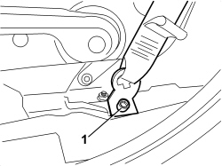
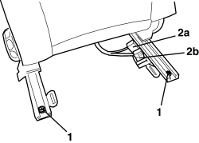
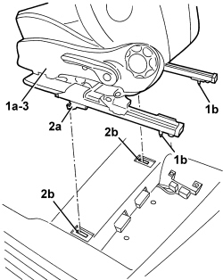
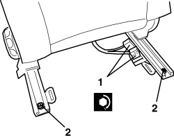
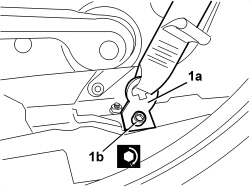

Procedures › 70 FITTINGS › 7045 FRONT SEATS › 7045A FRONT SEAT ASSEMBLY › 7045A10 FRONT SEAT (ONE), LEFT OR RIGHT - R.R. 7045A10 FRONT SEAT (ONE), LEFT OR RIGHT - R.R.
Path Procedures > 70 FITTINGS > 7045 FRONT SEATS > 7045A FRONT SEAT ASSEMBLY > 7045A10 FRONT SEAT (ONE), LEFT OR RIGHT - R.R.
Kind repair procedure (removal / refitting; the operation number is the code)
Applies to all engines; all production periods
Interactive page https://sloeber94.github.io/elrnDB/#/939011288
Applies to: all engines; all production periods
- Extract the electronic key.
- Disconnect the battery leads and insulate them.
- Wait for 10 minutes before continuing.
- Move the seat to the front end of its travel.
1. Undo the bolt fixing the end of the front seat belt on the seat.

Applies to: all engines; all production periods
1. Unscrew the rear fixing bolts.
2. Disconnect the electrical connections (2a) and (2b).

Applies to: all engines; all production periods
1. Raise seat (1a) at the rear and release pins (1b) from their seats.
2. Release front seat retainers (2a) from their seats (2b) in the floor.
3. Recover the seat.
Move the seat by grasping it only in the area of the head restraint and on the front side of the cushion.

Applies to: all engines; all production periods
- Check that the seat is not damaged.
It is absolutely forbidden to fit seats with pretensioners or side air bags that have fallen or been subject to abnormal impacts.Fit the seat with caution, avoiding falls or impact.Make sure that the battery is disconnected.
- Engage the front seat retainers in their seat on the floor.
1. Connect the electrical connections.
2. Tighten the rear fixing bolts.
Component
Fastening
dia
Value (daNm)
Validity
SEAT GUIDE FASTENING
Bolt
M10x35
2.2 ÷ 2.6

Applies to: all engines; all production periods
1. Position the end of the front seat belt (1a) on the front seat and tighten the bolt (1b) to the recommended torque.
Component
Fastening
dia
Value (daNm)
Validity
FRONT SEAT BELT END
Bolt
M10
3.6 ÷ 4.4
- Check that the seat is working.
- Use an Examiner to check that the system has not acquired errors during the operation.

Topics linked from this page (3)
Topics that link to this page (76) O002 FRONT SEAT BACKREST ANGLE ADJUSTMENT NOT WORKING fault diagnosis table (symptom -> numbered test steps) · all engines; all production periods 1040A74 INERTIA SWITCH FOR ELECTRIC PUMP SUPPLY CIRCUIT R + R repair procedure (removal / refitting; the operation number is the code) · engines: 1.9 JTS, 2.2 JTS, 3.2 JTS, 1.9 JTD 8V, 1.9 JTD 16V, 2.4 JTD 20V; all production periods 2125C30 GEAR ENGAGEMENT/SELECTION CABLES - R.R repair procedure (removal / refitting; the operation number is the code) · engines: 1.9 JTS, 2.2 JTS, 3.2 JTS, 1.9 JTD 8V, 1.9 JTD 16V, 2.4 JTD 20V; all production periods 2125C32 GEAR CONTROL LEVER MOUNT - R R repair procedure (removal / refitting; the operation number is the code) · engines: 1.9 JTS, 2.2 JTS, 3.2 JTS, 1.9 JTD 8V, 1.9 JTD 16V, 2.4 JTD 20V; all production periods 3350E30 LATERAL ACCELERATION AND SLEWING SENSOR - R.R repair procedure (removal / refitting; the operation number is the code) · all engines; all production periods 3380A10 HANDBRAKE LEVER - R+R repair procedure (removal / refitting; the operation number is the code) · all engines; all production periods 3380A30 HANDBRAKE CABLE - R+R repair procedure (removal / refitting; the operation number is the code) · all engines; all production periods 5010B24 UNDER-FACIA AIR DUCTS - R.R. repair procedure (removal / refitting; the operation number is the code) · all engines; all production periods 5010B44 REAR SEAT AIR DUCT - ARRANGE repair procedure (removal / refitting; the operation number is the code) · all engines; all production periods 5010B46 CENTRAL AIR DUCT TO REAR SEATS - R.R. repair procedure (removal / refitting; the operation number is the code) · all engines; all production periods 5010B47 SIDE AIR DUCT TO REAR SEATS (ONE), LH OR RH - R.R. repair procedure (removal / refitting; the operation number is the code) · all engines; all production periods 5040C10 AIR CONDITIONING CASING - R.R repair procedure (removal / refitting; the operation number is the code) · all engines; all production periods 5040C50 AIR CONDITIONING HEATER RADIATOR - R.R. repair procedure (removal / refitting; the operation number is the code) · all engines; all production periods 5040C64 A/C EVAPORATOR - R+R repair procedure (removal / refitting; the operation number is the code) · all engines; all production periods 5040C68 CONDENSATE DRAIN PIPE AND ANITI-CONDENSATION FILTER - ARRANGE repair procedure (removal / refitting; the operation number is the code) · all engines; all production periods 5040D80 AIR CONDITIONER SYSTEM WIRING BUNDLE - R R OR REPLACE repair procedure (removal / refitting; the operation number is the code) · all engines; all production periods 5040D86 AIR CONDITIONING RIGHT AIR MIXTURE FLAP CONTROL MOTOR - R.R repair procedure (removal / refitting; the operation number is the code) · all engines; all production periods 5040D94 AIR CONDITIONING LEFT UPPER AIR DISTRIBUTION FLAP MOTOR (DEFROST) - R.R repair procedure (removal / refitting; the operation number is the code) · all engines; all production periods 5040D96 AIR CONDITIONING RIGHT UPPER DISTRIBUTION FLAP MOTOR (DEFROST) - R.R repair procedure (removal / refitting; the operation number is the code) · all engines; all production periods 5505C28 ENGINE COMPARTMENT AND A.B.S BUILT-IN WIRING - R.R. repair procedure (removal / refitting; the operation number is the code) · all engines; all production periods 5505C31 BUILT-IN WIRING UNDER DASHBOARD - R.R. repair procedure (removal / refitting; the operation number is the code) · all engines; all production periods 5505C41 PASSENGER COMPARTMENT WIRING - R.R repair procedure (removal / refitting; the operation number is the code) · all engines; all production periods 5550D18 HANDBRAKE ON WARNING LIGHT SWITCH - R+R repair procedure (removal / refitting; the operation number is the code) · all engines; all production periods 5570T31 AERIAL COAXIAL LEAD - R R repair procedure (removal / refitting; the operation number is the code) · all engines; all production periods 5580C22 AIR BAG MODULE - PASSENGER SIDE - R.R repair procedure (removal / refitting; the operation number is the code) · all engines; all production periods 5580C24 PASSENGER SIDE AIR BAG MODULE SUPPORT R. R. repair procedure (removal / refitting; the operation number is the code) · all engines; all production periods 5580C44 FRONT SIDE BAG MODULE (ONE) LH OR RH - R.R repair procedure (removal / refitting; the operation number is the code) · all engines; all production periods 5580C86 SIDE BAG CABLE LOOM (ONE) LH OR RH - R.R OR REPLACE repair procedure (removal / refitting; the operation number is the code) · all engines; all production periods 7030B12 SLIDING ROOF (ASSEMBLY) - R+R repair procedure (removal / refitting; the operation number is the code) · all engines; all production periods 7030B40 DRAINAGE CHANNEL - R R repair procedure (removal / refitting; the operation number is the code) · all engines; all production periods 7030B50 SUN ROOF SLIDING GUIDE (ONE), LH OR RH - R.R repair procedure (removal / refitting; the operation number is the code) · all engines; all production periods 7040A10 DASHBOARD TRIM - R+R repair procedure (removal / refitting; the operation number is the code) · all engines; all production periods 7040A89 REINFORCEMENT BRACKET BETWEEN DASHBOARD SUPPORTING CROSSMEMER AND BODYSHELL - R.R. repair procedure (removal / refitting; the operation number is the code) · all engines; all production periods 7040H10 ROOF PANEL LINING - R.R. repair procedure (removal / refitting; the operation number is the code) · all engines; all production periods 7040H16 ROOF PANEL LINING FOR VERSIONS WITH SUN ROOF - R.R repair procedure (removal / refitting; the operation number is the code) · all engines; all production periods 7040L06 PASSENGER COMPARTMENT FLOOR RIGHT FRONT CARPET - R. R. repair procedure (removal / refitting; the operation number is the code) · all engines; all production periods 7040L07 PASSENGER COMPARTMENT FLOOR LEFT FRONT CARPET - R.R. repair procedure (removal / refitting; the operation number is the code) · all engines; all production periods 7040L18 PASSENGER COMPARTMENT FLOOR REAR CARPET - R.R. repair procedure (removal / refitting; the operation number is the code) · all engines; all production periods 7040L20 TUNNEL COVER - R.R repair procedure (removal / refitting; the operation number is the code) · all engines; all production periods 7040L23 TRIM ON TUNNEL COVER - R.R. repair procedure (removal / refitting; the operation number is the code) · all engines; all production periods 7040L70 TUNNEL COVER REAR TRIM - R.R. repair procedure (removal / refitting; the operation number is the code) · all engines; all production periods 7040L73 BOTTLE-HOLDER/ASHTRAY ON REAR TUNNEL TRIM - R.R. repair procedure (removal / refitting; the operation number is the code) · all engines; all production periods 7040L74 TUNNEL TRIM SUPPORT BRACKET/MOUNT R R repair procedure (removal / refitting; the operation number is the code) · all engines; all production periods 7045A39 DEVICE FOR DRIVER'S SEAT BACKREST LUMBAR ADJUSTMENT - R.R. repair procedure (removal / refitting; the operation number is the code) · all engines; all production periods 7045A47 BACKREST ADJUSTMENT DEVICE FOR ONE SEAT, LEFT OR RIGHT - R.R. repair procedure (removal / refitting; the operation number is the code) · all engines; all production periods; only with equipment: Electric seats 7045A66 SLIDING GUIDE (ONE),LEFT OR RIGHT FOR FRONT SEAT - R.R. repair procedure (removal / refitting; the operation number is the code) · all engines; all production periods 7045A81 FRONT SEAT SLIDING CONTROL HOSE (ONE), LH OR RH - R R repair procedure (removal / refitting; the operation number is the code) · all engines; all production periods 7045A86 FRONT SEAT FRAME (ONE), LEFT OR RIGHT, R.R. repair procedure (removal / refitting; the operation number is the code) · all engines; all production periods 7045D10 TRIM FOR ONE FRONT SEAT LH OR RH - R.R repair procedure (removal / refitting; the operation number is the code) · all engines; all production periods 7045D18 FRONT SEAT CUSHION SPRINGING (ONE), LH OR RH - R R repair procedure (removal / refitting; the operation number is the code) · all engines; all production periods 7045D20 FRONT SEAT CUSHION COVER, LEFT OR RIGHT - R.R. repair procedure (removal / refitting; the operation number is the code) · all engines; all production periods 7045D30 FRONT SEAT BACKREST COVER, LEFT OR RIGHT - R.R. repair procedure (removal / refitting; the operation number is the code) · all engines; all production periods 7045J11 REAR SEAT GUIDES CONNECTION BAR, (ONE) LH OR RH - R R repair procedure (removal / refitting; the operation number is the code) · all engines; all production periods; only with equipment: Electric seats 7045J26 FRONT SEAT SLIDE MOTOR, L/H OR R/H - R+R FOLLOWING ELECTRICAL WIRING CHECK repair procedure (removal / refitting; the operation number is the code) · all engines; all production periods; only with equipment: Electric seats 7045J30 FRONT SEAT LIFTING MOTOR, LEFT OR RIGHT - R.R. FOLLOWING ELECTRICAL WIRING CHECK repair procedure (removal / refitting; the operation number is the code) · all engines; all production periods; only with equipment: Electric seats 7045J33 FRONT SEAT SWINGING MOTOR, (ONE) LH OR RH - R R AFTER CHECKING THE ELECTRIC CIRCUIT repair procedure (removal / refitting; the operation number is the code) · all engines; all production periods; only with equipment: Electric seats 7045J34 FRONT SEAT BACKREST ANGLE MOTOR, LEFT OR RIGHT - R.R. FOLLOWING ELECTRICAL WIRING CHECK repair procedure (removal / refitting; the operation number is the code) · all engines; all production periods; only with equipment: Electric seats 7045M22 HEATER PAD FOR FRONT SEAT CUSHION, LEFT OR RIGHT - R.R. FOLLOWING ELECTRICAL CIRCUIT CHECK repair procedure (removal / refitting; the operation number is the code) · all engines; all production periods 7045M26 L/H OR R/H FRONT SEAT SQUAB HEAT PAD - R+R FOLLOWING ELECTRICAL WIRING CHECK repair procedure (removal / refitting; the operation number is the code) · all engines; all production periods 7065A24 ANCHORAGE LINK WITH PRETENSIONER FOR ONE FRONT SEAT BELT LH OR RH R R repair procedure (removal / refitting; the operation number is the code) · all engines; all production periods 7065A34 PASSENGER PRESENCE SENSOR ON FRONT SEAT FOR INDICATING SEATBELT UNFASTENED R R repair procedure (removal / refitting; the operation number is the code) · all engines; all production periods 7210A74 R R FACIA SUPPORT BEAM repair procedure (removal / refitting; the operation number is the code) · all engines; all production periods E1050 CAN CONNECTION LINES - WIRING DIAGRAM wiring diagram · all engines; all production periods E1050 CAN CONNECTION LINES - COMPONENT LOCATION component location drawing · all engines; all production periods E2535 CONTROLS LIGHTING - WIRING DIAGRAM wiring diagram · all engines; all production periods; only with equipment: Low setup E2535 CONTROLS LIGHTING - COMPONENT LOCATION component location drawing · all engines; all production periods; only with equipment: Low setup E2535 CONTROLS LIGHTING - WIRING DIAGRAM wiring diagram · all engines; all production periods; only with equipment: High setup E2535 CONTROLS LIGHTING - COMPONENT LOCATION component location drawing · all engines; all production periods; only with equipment: High setup E3075 HEATED SEATS - WIRING DIAGRAM wiring diagram · all engines; all production periods E3075 HEATED SEATS - COMPONENT LOCATION component location drawing · all engines; all production periods E3076 ELECTRICALLY ADJUSTABLE SEATS - WIRING DIAGRAM wiring diagram · all engines; all production periods; only with equipment: High setup E3076 ELECTRICALLY ADJUSTABLE SEATS - COMPONENT LOCATION component location drawing · all engines; all production periods; only with equipment: High setup E7030 AIR BAG - WIRING DIAGRAM wiring diagram · all engines; production: From 01/06 E7030 AIR BAG - COMPONENT LOCATION component location drawing · all engines; production: From 01/06 E7030 AIR BAG - WIRING DIAGRAM wiring diagram · all engines; production: Up to 12/05 E7030 AIR BAG - COMPONENT LOCATION component location drawing · all engines; all production periods
 Removing
Removing Refitting
Refitting